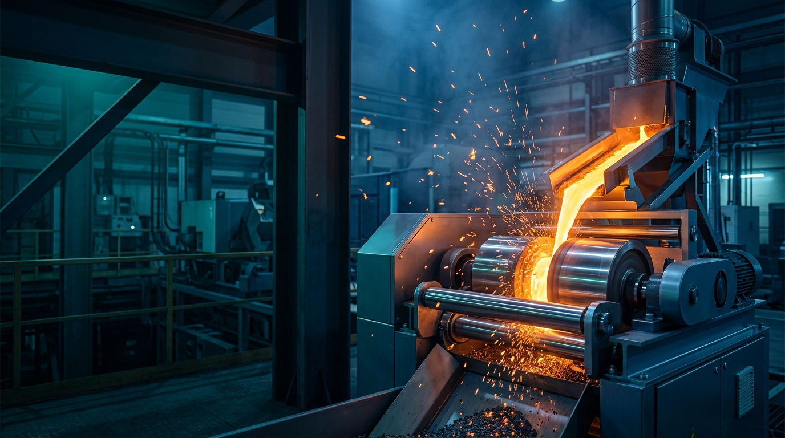
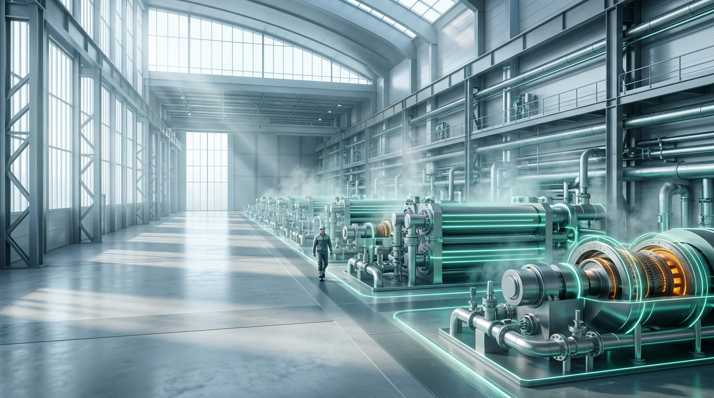
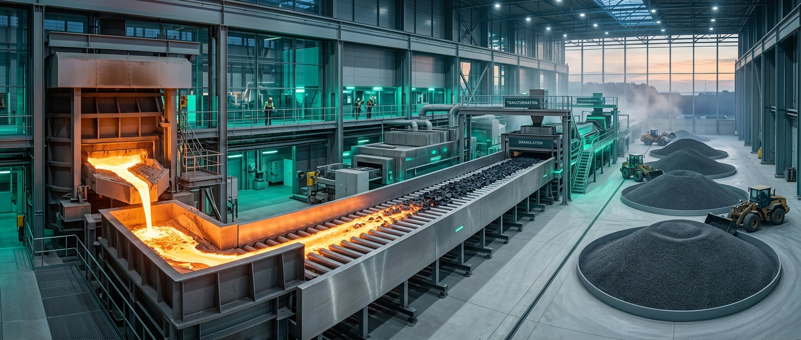

绿水青山 工业新生

去浊存清 化废为材

余热入流 能源归环
数据有迹 低碳有据
始于现场 归于共生
AAA企业信用资质
8亿累计签约规模
近40核心专利技术
诚信为基 创新为魂

减少水耗与二次污染，适配高温连续工况，面向钢厂既有产线改造。
以膜式换热和系统集成，把释放过程中的热能转化为可利用能源。
沉淀工况、能效、设备状态和运维复盘，支持持续优化。
少水少尘 系统归环
Core technology
让运行数据
成为低碳资产
把工况、能效、设备状态、资源化质量和运维复盘沉淀为持续优化的运营视图，让项目经验可以被复用。
工况关键状态追踪
能效回收与消耗
复盘价值沉淀
Measure热态采集
Recover换热回收
Control连续控制
Review运行复盘
数据有迹 低碳有据
Engineering proof
18 家大型钢厂
33 条生产线验证
以授权信息为边界，呈现工况、解决方案、落地规模和可复用经验，不伪造客户背书。
18合作钢厂
33生产线
8亿签约规模
山河为证 工程有据
始于沟通 归于共生